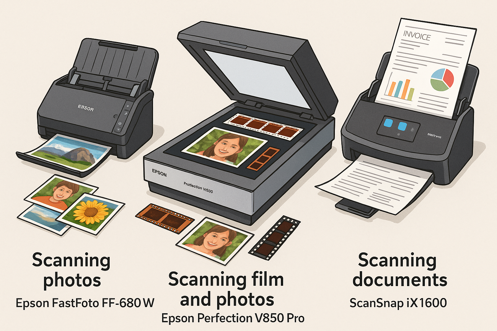
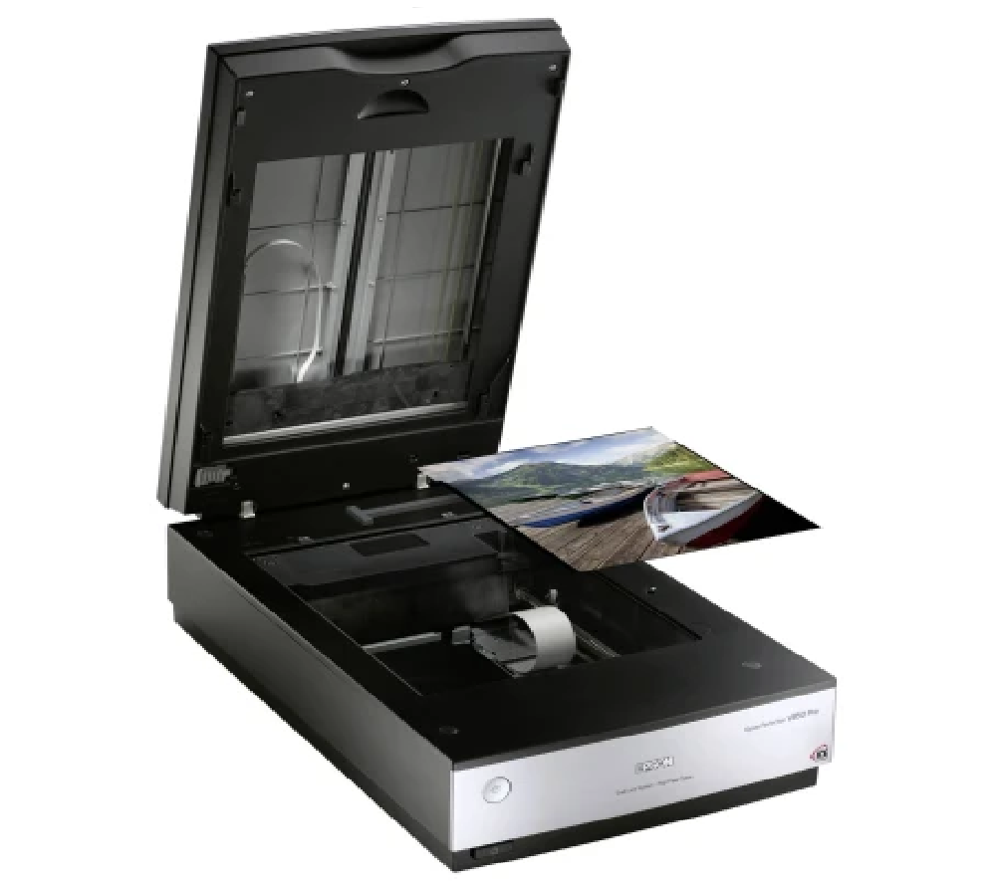
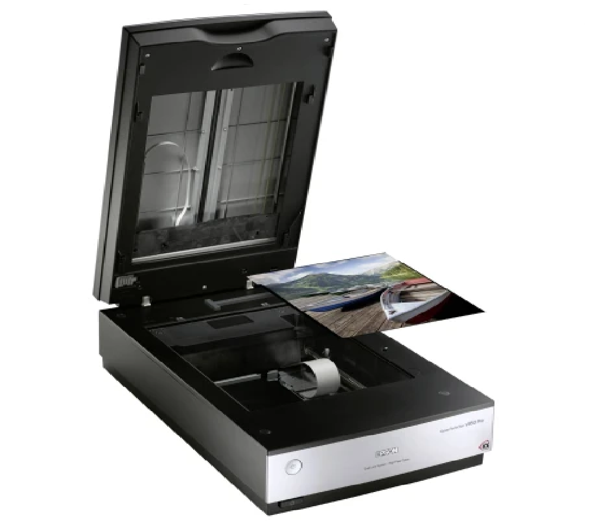

Illustrasjon: Profesjonelle skannere for foto, film og dokumenter

Ekstra trygghet: Jeg kan komme hjem til deg og digitalisere bilder eller dokumenter på stedet. Alt skjer trygt og diskret uten at dine kjæreste minner forlater hjemmet.
📞 Kontakt og spørsmål
Ta gjerne kontakt uforpliktet, så avtaler vi pris basert på det du ønsker å få gjort.
Jeg garanterer at prisene er konkurransedyktige. Kontakt skjer via Finn.no.
🌟 Fornøydgaranti og kommende eksempler
Fornøyd garanti: Jeg ønsker at du skal bli fornøyd med resultatet. Hvis du ikke er fornøyd, gjør jeg nødvendige justeringer etter avtale.
Kundeeksempler: Flere ekte eksempler på restaurering og digitalisering kommer snart – følg med!
 
